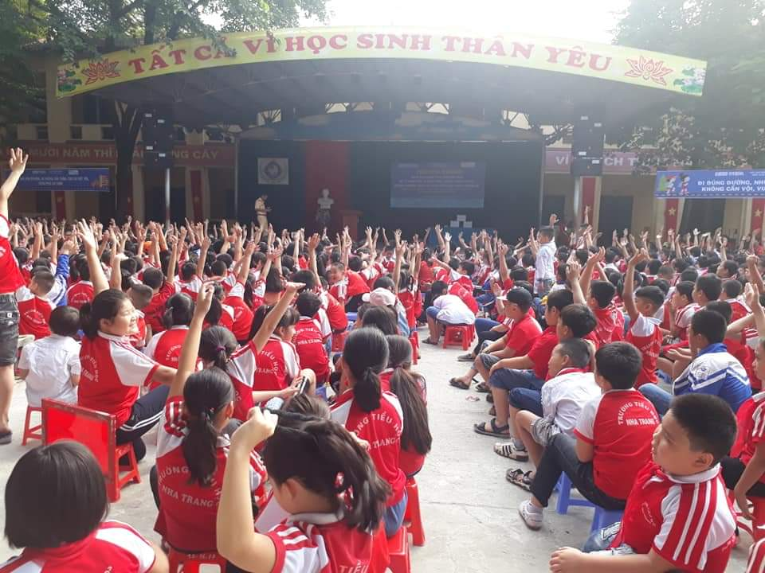
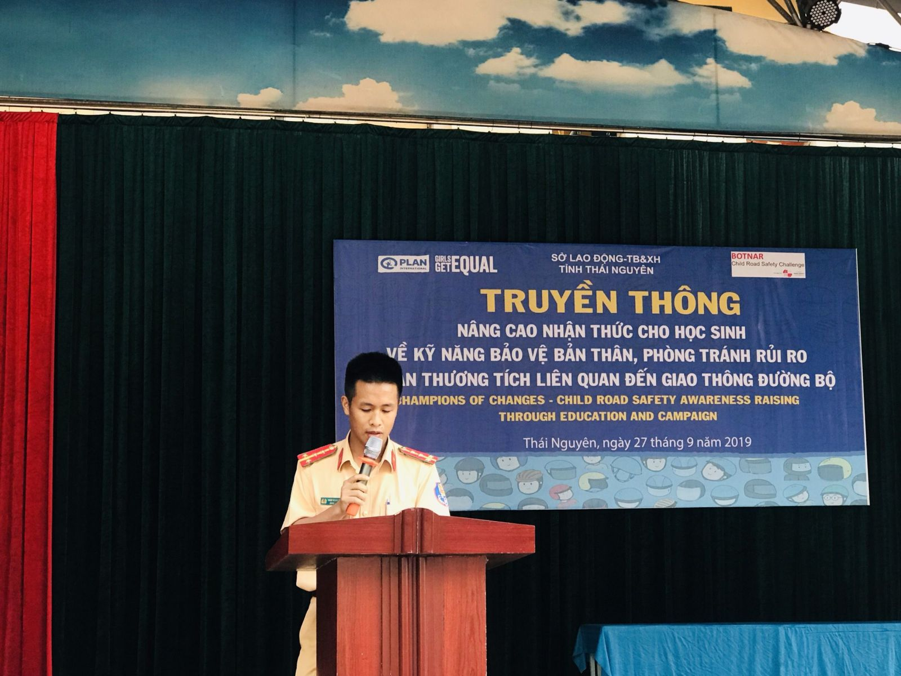
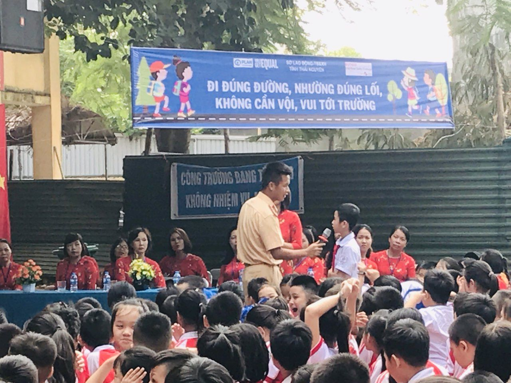
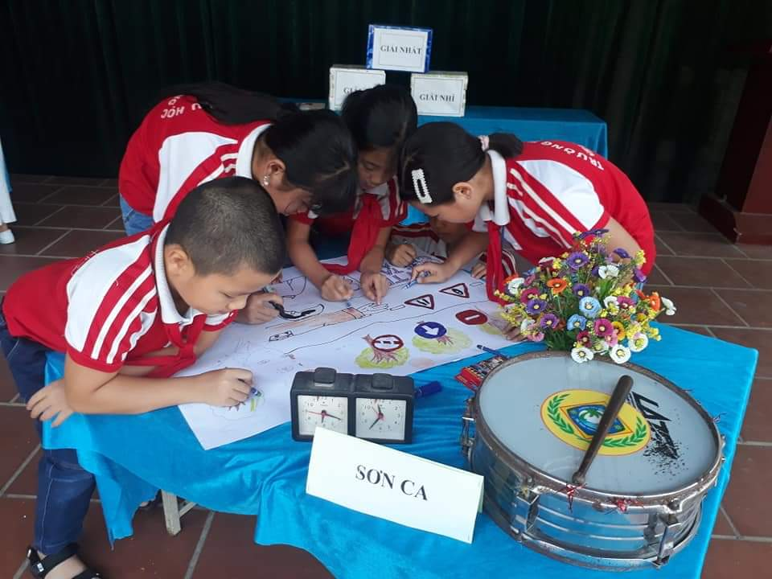
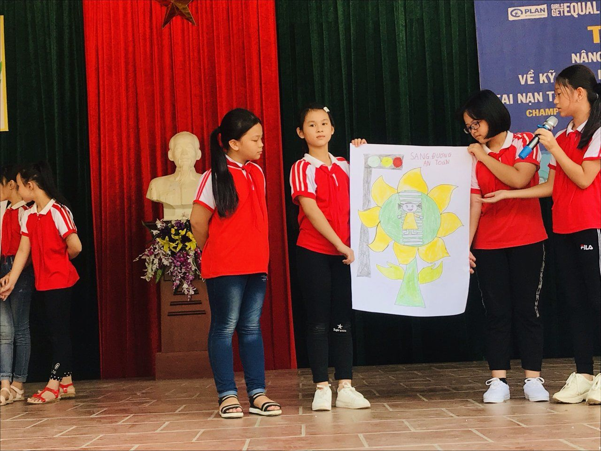
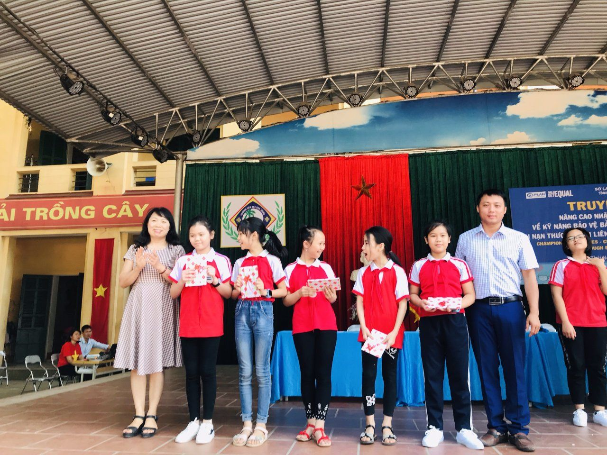

Liên đội TH Nha Trang tổ chức truyền thông An toàn giao thông năm học 2019 - 2020
Liên đội TH Nha Trang tổ chức truyền thông An toàn giao thông nâng cao nhận thức cho học sinh về kỹ năng bảo vệ bản thân, phòng tránh rủi ro tai nạn thương tích liên quan đến giao thông đường bộ năm 2019.
Nằm trong dự án Cải thiện an toàn giao thông cho trẻ em khu vực trường học tại T.P Thái Nguyên của tổ chức PLAN. Ngày 27/11/2019 được sự nhất trí của Phòng GD&ĐT T.P Thái Nguyên, Liên đội TH Nha Trang đã phối hợp với Công An thành phố Thái Nguyên, dự án PLAN tổ chức buổi truyền thông An toàn giao thông nâng cao nhận thức cho học sinh, tuyên truyền phổ biến luật Giao thông tới toàn thể các thầy cô giáo, các anh chị phụ trách và toàn thể đội viên thiếu nhi của liên đội. Với mục đích nâng cao nhận thức pháp luật nói chung và pháp luật về giao thông nói riêng, hình thành ý thức tự giác tuân thủ chấp hành pháp luật cho mỗi học sinh khi tham gia giao thông; tạo môi trường giao thông trật tự, an toàn, văn minh, thân thiện, từng bước hình thành “văn hóa giao thông” trong mỗi người khi tham gia giao thông. Thông qua các hoạt động tiểu phẩm “Hãy tham gia giao thông an toàn”, thi vẽ tranh và thuyết trình tranh với chủ đề “An toàn giao thông trong mắt trẻ thơ” do 3 đội thi thể hiện trên sân khấu. Những bức tranh với cách phối màu tươi sáng và những thông điệp về ATGT rất gần gũi với các em thiếu nhi đã nhận được sự đánh giá cao của ban giám khảo. Đặc biệt là phần giao lưu với khán giả đã được các em học sinh hưởng ứng một cách nhiệt tình. Ngoài những món quà thú vị, những phần thưởng dành cho người trả lời xuất sắc, hơn hết các em rất hào hứng khi được hiểu biết thêm những kiến thức về luật giao thông. Chương trình truyền thông kết thúc trong sự vui tươi, phấn khởi của cả thầy cô và trò trường TH Nha Trang. .Dưới đây là một số hình ảnh tại chương trình.

Toàn cảnh chương trình

Đại uý Trần Mạnh Tuấn – Cán bộ CSGT Trật tự tuyên truyền

và giao lưu kiến thức ATGT

Vẽ tranh với chủ đề “An toàn giao thông trong mắt trẻ thơ”

Thuyết trình tranh – Đội Sơn Ca

Giao lưu cùng cô giáo Vũ Thị Thanh Xuyên – Chuyên gia giáo dục và bảo vệ trẻ em, cán bộ dự án PLAN
Giao Lưu văn nghệ
Đại biểu trao giải Thuyết trình tranh XS nhất cho đội Vành Khuyên
Đ.c Hiệu trưởng trao giải cho các đội đạt giải
Đại diện trưởng các Ban, đoàn, thể lên kí cam kết thực hiện ATGT
Tác giả
Liên đội TH Nha Trang